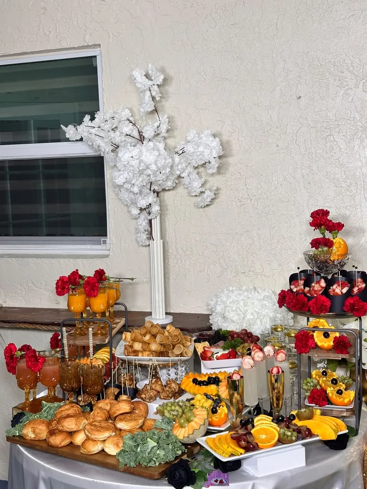

01 / Rooted in Flavor
Haitian Cuisine & Catering
Warm, familiar flavors inspired by our heritage, prepared to be shared. Zile brings family and friends closer, one plate at a time.
Tell us about your occasion, your guest count, and what you love so we can discuss options for your celebration.
Request a Quote ↗